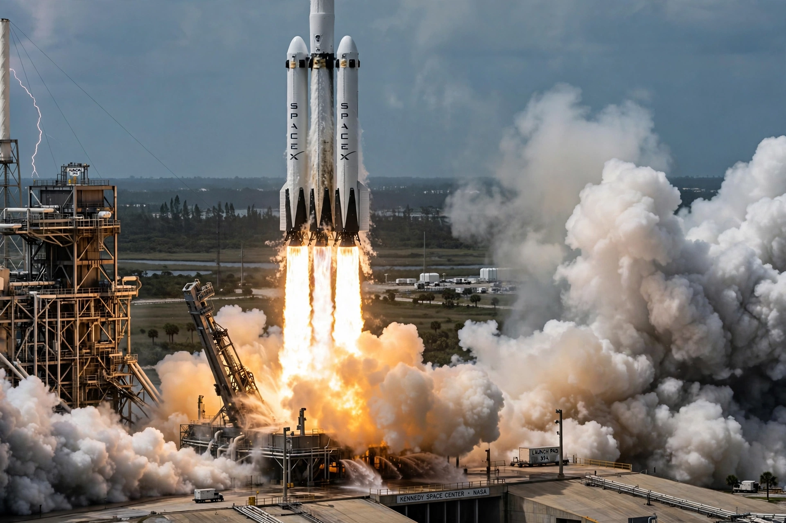

Falcon Heavy
From Wikipedia, the free encyclopedia
| Falcon Heavy | |
|---|---|
| Manufacturer | SpaceX |
| Country | United States |
| First flight | 6 February 2018 |
| Status | Operational |
| Height | 70 m |

Falcon Heavy lifts off on its maiden flight.Falcon Heavy is a partially reusable heavy-lift launch vehicle developed and manufactured by SpaceX. It consists of three Falcon 9 first-stage cores strapped together — a centre core and two side boosters — giving 27 Merlin engines at liftoff and making it, at its debut, the most powerful operational rocket in the world.
Its maiden flight on 6 February 2018 carried Elon Musk's Tesla Roadster as a mass simulator toward a heliocentric orbit, with a mannequin dubbed "Starman" in the driver's seat; the two side boosters returned to land simultaneously at Cape Canaveral in one of the most replayed images of the reusable-rocket era, though the centre core missed its drone ship.
Capability and flights
Falcon Heavy can lift about 64 tonnes to low Earth orbit in expendable configuration, at a price far below older heavy launchers, because most of the system is reused Falcon 9 hardware. It has launched large national-security payloads for the US Space Force, NASA's Psyche asteroid mission, and the Jupiter-bound Europa Clipper — for which all three cores were expended to maximise energy.
Heavy is also manifested to launch the first elements of the Gateway lunar station. Its role has narrowed somewhat as SpaceX develops the fully reusable Starship, but it remains the company's highest-energy operational vehicle.
See also
Falcon 9 · SpaceX · Merlin (rocket engine) · SpaceX Starship · Europa Clipper